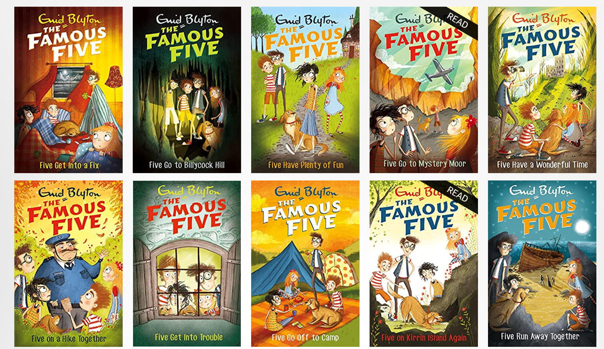

HOME
HOME

Type: Series
Number of Books: 21
Author: Enid Blyton
Publisher: Hodder & Stoughton
Genre: Fiction, Children's Mystery
Cast: Five children: Dick, Julian, Annie, George - They are about 10-13 years old. George owns an island.
The books are about the adventures the five children have together! Let's look a little deeper into their character -
Julian: He is the eldest of the cousins. He is also the most responsible. He is often left in charge when the adults
go away. Sometimes he can be overprotective and is the brother of Annie and Dick. George is his cousin. Julian gets on well with adults and
is very polite, helpful and caring. He does have a quick tongue and can offer sharp words to nasty adults who try to cross him.
Dick: He is the same age as George but two years younger than Julian. He was a bit of a cry-baby when he was little
but now he is a strong and competent boy. He can be a joker, and has a great sense of humour. Don't be suprised if its Dick who solves the
mystery or identifies a clue to solve the mystery. He makes fun of Julian when he's too serious and can win over George. Dick's usually hungry
and never likes to miss a meal!
Anne: Anne is the youngest of the siblings. She likes wearing dresses and playing with dolls but in other ways
she is very similar to her cousin George. Just like George, Anne puts other people first and prides herself on her tidyness. She likes horse-riding
and becomes captain of games at her school. Anne isn't a fan of adventures - she's good at sorting and organising her cousins and meals. She's quiet but
can stand up for herself. She also turns from a mouse to a tiger in a book!
George: Don't try and call George by her proper name, Georgina - she hates it. She wishes she was a boy and will never wear dresses.
She's an only child with her parents Quentin and Fanny. At the start, she's moody and sulky because she doesn't think she needs friends, just
Timothy, her dog. She's never scared except for her dog, never for her own safety. However, as she gets to know her cousins, she warms up and enjoys having
friends. George has short, curly hair and blue eyes. She loves outdoor activities. She's extremely honest and kind at heart but she has a fiery personality!
Timothy: Timothy is a big, brown mongrel dog. He is George's soulmate - they're inseperable ever since she found him as a puppy on the moor.
However, she has to keep him a secret from her parents for some time. Timmy can be boisterous when he's being friendly but he can also be fierce when he is angered!
Criminals think of him as an easy targer but they underestimate his cleverness and loyalty to the rest of the five. He loves to roam free though he enjoys riding out
to seas in boats.
Review: The series is great! The plots are mysterious ( you never know what's going to happen in the plots
), and the books are a page turner! However, the books are predictable. For example, you know that this is the part of the book something's
going to happen! It can be either that the 5 are going to get captured or that they are going to run away. George's behaviour is also very
predictable because she is quite stubborn. I think that is the only issue, otherwise the books are very good and you will find that anybody, who does
or doesn't like books, will be captivated by the book's story.